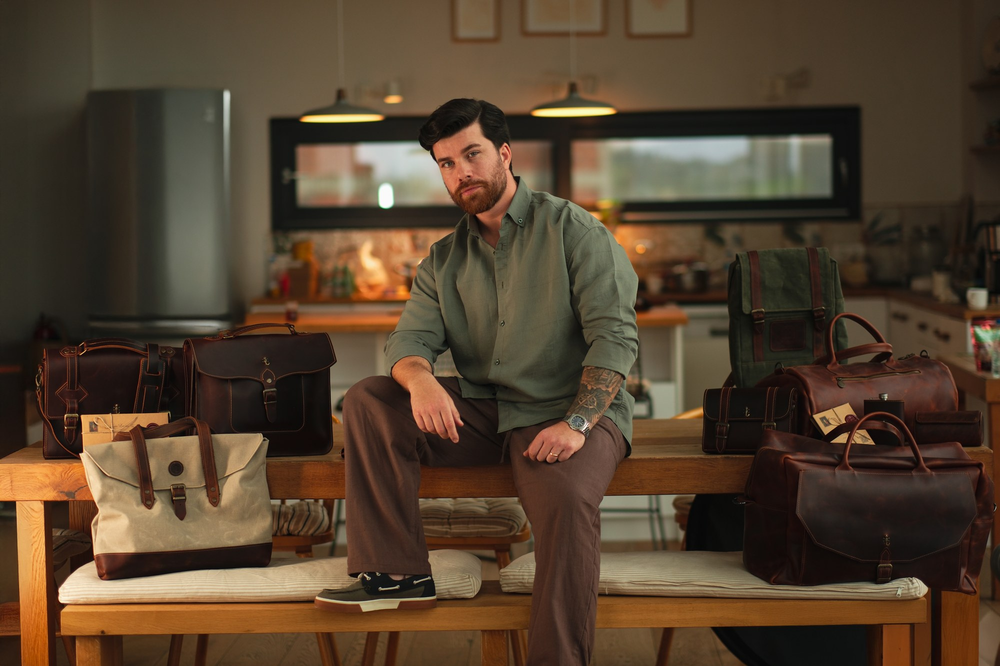

MODA · YAŞAM · GÖRSEL ANLATIKADRAJIMDA SEMENDERCO
Semenderco.

Bir markanın
kendine has dünyası.
kendine has dünyası.
Dokudan kadraja,
kadrajdan günlük hayata.
Bir kumaşın dokusu, derinin zamanla kazandığı karakter, bir çantanın günün içine karışması… Semenderco için ürettiğim içeriklerin çıkış noktası, ürünlerin bu küçük detayları ve taşıdıkları yaşam hissi.
Bu hikâyeyi fotoğraf ve Reels çekimleriyle anlatıyor, web sitesi için hazırladığım ürün fotoğraflarıyla detaylara yaklaşıyorum. Yapay zekâyla oluşturduğum görseller ise markanın dünyasını farklı sahnelere taşıyor.
Sosyal medya yönetimini de üstlenerek çekimden paylaşıma uzanan süreci bir arada yürütüyorum. Her içerikte aynı karakteri koruyan, Semenderco’ya ait bir görsel dil kuruyorum.
Reels & video · Fotoğraf · Web sitesi ürün çekimleri · Yapay zekâ görselleri · Sosyal medya yönetimi
01 / REELS & VİDEO
ALTI FİLMMarkanın ritmi.
Semenderco / 02
REELSSemenderco / 03
REELSSemenderco / 04
REELSSemenderco / 05
REELSSemenderco / 06
REELS02 / FOTOĞRAF
DÖRT KAREKarakter, detayda saklı.
03 / YAPAY ZEKÂ İLE GÖRSEL ÜRETİM
Hikâyeye yeni bir sahne.
Semenderco’nun ürünlerini farklı atmosferlerde anlatmak için oluşturduğum yapay zekâ görselleri.
SIRADAKİ PROJEHub Coffee&Kitchen ↗